Frustum culling without edge popping: radius-padded bounding-sphere tests vs center-point culling FAQ
Understand in 3 minutes why large peripheral objects pop out of existence during camera pans, and reproduce a zero-false-negative bounding-sphere frustum culler in 10 minutes.
中文 · Interactive Demo · Measured 7-Card Report
① 📌 Executive Summary
- Testing only an object's center point against frustum planes ($\mathbf{n}\cdot\mathbf{c} + d \ge 0$) prematurely culls visible objects straddling the screen edge. When a sphere of radius $r = 0.68$ has its center just
0.06units outside the left frustum plane,0.62units of its body remain visible inside the frame; at14°camera pan,center-pointculling falsely drops4out of11visible spheres, causing jarring edge popping. - Conservative radius-padded plane testing ($\mathbf{n}\cdot\mathbf{c} + d \ge -r$ with $|\mathbf{n}| = 1$) eliminates all
4false-negative pops down to measured0. Replacing threshold0with-radds zero extra dot products per plane while retaining11/11visible spheres at14°and0false-negative pops across all 71 sampled pan angles. - Camera-space pre-normalized plane dot products match world-space Gribb-Hartmann matrix extraction within
3.55e-15scene units while running2.25×faster (5.71 msvs12.82 msfor 8192 18-sphere cull passes). - 54-solid 18-sphere frustum radar stage, 13 local acceptance checks. Scene geometry is
synthetic; plane-distance margins and Node CPU timings aremeasured;StopThePophierarchical tile sorting andFlashGSCUDA kernels arenot_measured.

Daily capability direction check: CVPR 2025 paper FlashGS: Efficient 3D Gaussian Splatting for Large-scale and High-resolution Rendering (arXiv:2408.07967) and SIGGRAPH 2024 / ACM TOG paper StopThePop: Sorted Gaussian Splatting for View-Consistent Real-time Rendering (arXiv:2402.00525) demonstrate that naive center/depth simplifications in 3D Gaussian Splatting cause distracting popping artifacts during camera rotation, requiring conservative bounding-extent culling and hierarchical tile intersection tests. Verified 2026-11-10; this demo implements deterministic unit-normal bounding-sphere frustum culling without running CUDA tile rasterizers.
② 🎯 Architect & Client Q&A
Q1 When should we choose hierarchical tile rasterizers (StopThePop / FlashGS) vs conservative bounding-sphere plane culling?
Evaluate hierarchical tile sorting (StopThePop) and warp-scheduled CUDA rasterizers (FlashGS) when building high-resolution 3D Gaussian Splatting engines that must sort millions of overlapping semi-transparent splats per pixel.
Use conservative unit-normal bounding-sphere plane culling ($\mathbf{n}_k \cdot \mathbf{c} + d_k \ge -r$) as the first-stage visibility gate in WebGL / Three.js scene graphs, instanced meshes, and particle systems—because it prevents wide objects from popping on and off at the viewport borders with a single threshold change.
Q2 Under what constraints is radius-padded plane culling strictly superior to center-point NDC culling ($|x_{\text{NDC}}| \le 1$)?
Checking whether an object's projected center satisfies $|x_{\text{clip}}| \le w_{\text{clip}}$ ($|x_{\text{NDC}}| \le 1$) treats the object as a zero-radius mathematical point.
For any mesh, particle, or Gaussian splat with non-zero bounding radius $r > 0$, center-point culling drops the object the instant its center crosses the frustum boundary—even when nearly half of the object is still inside the viewport. Padding each unit-normal frustum plane outward by $-r$ is strictly required for pop-free camera pans.
Q3 Why must frustum plane normals be normalized to unit length before comparing against $-r$?
When extracting frustum planes from a $4\times 4$ view-projection matrix $\mathbf{M} = \mathbf{P}\mathbf{V}$ via Gribb-Hartmann row combinations (e.g., $\text{row}_4 + \text{row}_1 = (A, B, C, D)$), the resulting plane normal has magnitude:
$$|\mathbf{n}_{\text{raw}}| = \sqrt{A^2 + B^2 + C^2} = \sqrt{\cot^2(\theta / 2) + 1} = \frac{1}{\sin(\theta / 2)}$$
If you only compare $A x + B y + C z + D \ge 0$ (center-point test), the scale factor $\frac{1}{\sin(\theta/2)}$ does not change the sign. However, when comparing against a world-space radius $-r$, failing to divide by $\sqrt{A^2 + B^2 + C^2}$ shrinks the effective padding radius by $\sin(\theta / 2)$!
In camera space, the inward unit normals of the left and right frustum planes are simply:
$$\mathbf{n}_L = \left(+\cos\frac{\theta}{2}, ; 0, ; -\sin\frac{\theta}{2}\right), \quad \mathbf{n}_R = \left(-\cos\frac{\theta}{2}, ; 0, ; -\sin\frac{\theta}{2}\right)$$
Because $\cos^2\frac{\theta}{2} + \sin^2\frac{\theta}{2} \equiv 1$, the dot product $s_L = x_c \cos\frac{\theta}{2} + \text{depth}\cdot\sin\frac{\theta}{2}$ is already the exact Euclidean signed distance—no square root or division required!
Q4 How can I reproduce this in 10 minutes?
- Run
npm run devand open/demos/frustum-sphere-culler/, initialized at camera pan14.0°,FOV = 44°, andr = 0.68. - In
sphere-paddedmode, observe the top-down frustum radar: all11spheres intersecting or inside the orange frustum rays remain active (kept 11/11 visible · false pops 0). - Switch to
center-pointmode atpan = 14.0°: the4spheres straddling the left and right frustum rays shrink and turn pale (kept 7/11 visible · false pops 4), exposing premature edge culling. - Scrub Camera pan (
-35°..+35°) or adjust FOV (28°..68°) and Sphere radius (0.3–1.1); test an invalid FOV such as120°to verify atomic rejection and state preservation. - Click
Export cullto downloadFRUSTUM_CULLING_SPEC.jsonwith per-sphere plane margins and cull flags. - Run
npx vitest run tests/frustum-culler.test.ts, then build and runnode scripts/benchmark-frustum-culler.mjsagainst a port 4335 preview server.
③ 🧭 Visual Diagrams
④ 📊 Architect Decision Matrix
| Criterion | Center-Point Culling (center-point, $s \ge 0$) |
Unnormalized Matrix Plane $\ge -r$ | World-Space Gribb-Hartmann Normalized | Camera-Space Unit-Normal Plane (sphere-padded) |
|---|---|---|---|---|
False-negative pops at 14° pan |
Prematurely drops 4 visible spheres (7/11 kept) |
Drops spheres due to unnormalized $\csc(\theta/2)$ scale | 0 false pops (11/11 kept) |
Measured 0 false pops (11/11 kept) |
| Total false-negative pops across 71 pan angles | 2–5 visible spheres dropped on every angle |
Varies erroneously with FOV | 0 |
Measured 0 across all 71 angles |
| Metric correctness of plane distance | Sign only | Scaled by $1/\sin(\theta/2)$ | Exact Euclidean distance (3.55e-15 u diff) |
Exact Euclidean distance without hypot |
| 8192 × 18-sphere Node CPU median | Fast (with visible edge popping) | Fast (with wrong effective radius) | 12.82 ms (includes normalization hypot) |
5.71 ms (2.25× faster) |
| Best architectural role | Zero-radius point clouds only | Buggy implementation to avoid | General world-space multi-plane culler | Real-time 3D scene graphs & particle/splat cullers |
Quantitative example: At $\text{FOV} = 44^\circ$ ($\cos 22^\circ = 0.92718, \sin 22^\circ = 0.37461$), a sphere centered at camera-space $(x_c = -1.62, \text{depth} = 3.85)$ has signed left-plane distance $s_L = -1.62(0.92718) + 3.85(0.37461) = -0.0598\text{ u} < 0$. Center-point culling discards it because $s_L < 0$, even though $0.68 - 0.0598 = 0.6202\text{ u}$ of the sphere extends inside the frustum. The padded test $s_L = -0.0598 \ge -0.68$ retains it properly.
⑤ 🧪 New Capability Demo & Benchmark Findings (with 7-Card)
Sealed data records 54 3D solids, 18 bounding spheres audited across 71 camera pan angles, and exact margin equivalence between camera-space unit-normal plane dot products and world-space Gribb-Hartmann matrix plane extraction + normalization (maximum_solver_error = 3.55e-15 scene units).
| Node CPU 18-Sphere Cull Passes | Camera-Space Unit Plane Median | Gribb-Hartmann Normalized Median |
|---|---|---|
| 128 | 0.87 ms | 1.02 ms |
| 1024 | 0.64 ms | 3.07 ms |
| 8192 | 5.71 ms | 12.82 ms |
Each load tier runs 7 alternating repetitions after warmup on Node CPU (excluding WebGL rendering). At 8192 passes, camera-space unit-normal plane evaluation is 2.25× faster than world-space matrix extraction + normalization while eliminating all 4 false-negative edge pops at 14°.
Measured 7-Card Report (EN) · 中文七卡. Scene geometry is synthetic, plane-distance checks and CPU timings are measured, and StopThePop / FlashGS CUDA tile rasterizers are not_measured.
⑥ 🛠️ Architect Checklist
- Never use zero-radius center-point frustum culling ($\mathbf{n}\cdot\mathbf{c} + d \ge 0$ or $|x_{\text{NDC}}| \le 1$) on finite-volume meshes, particles, or 3D Gaussians.
- Maintain a conservative world-space bounding radius $r$ for each object (multiplying local radius by $\max(|s_x|, |s_y|, |s_z|)$ under non-uniform scale).
- Normalize frustum plane normals to unit length ($|\mathbf{n}_k| = 1$) before comparing signed plane distance against $-r$.
- Cull an object only when at least one frustum plane satisfies $\mathbf{n}_k \cdot \mathbf{c} + d_k < -r$.
- Use camera-space unit plane normals $(\pm\cos\frac{\theta}{2}, 0, -\sin\frac{\theta}{2})$ to avoid per-plane
Math.hypotnormalization overhead. - Sweep camera pan angles in unit tests and assert
0false-negative culls on boundary-straddling spheres. - Cross-check camera-space signed distances against normalized Gribb-Hartmann world-matrix planes (
< 1e-13agreement). - Validate pan, FOV, and radius bounds and reject invalid inputs (
fovDeg = 120) atomically. - Verify that forward and reverse pan scrubbing produce identical turret matrices and retained sphere sets.
- Label unexecuted GPU hierarchical tile sorting (
StopThePop) and CUDA warp scheduling (FlashGS) explicitly asnot_measured.
Primary sources: FlashGS (arXiv:2408.07967) (CVPR 2025) accelerates large-scale 3D Gaussian rasterization via exact geometric intersection and redundancy elimination; StopThePop (arXiv:2402.00525) (SIGGRAPH 2024 / ACM TOG) eliminates view-rotation popping artifacts via hierarchical tile culling and sorting. Verified 2026-11-10; this demo is an original deterministic bounding-sphere frustum culling workbench and does not run CUDA kernels.